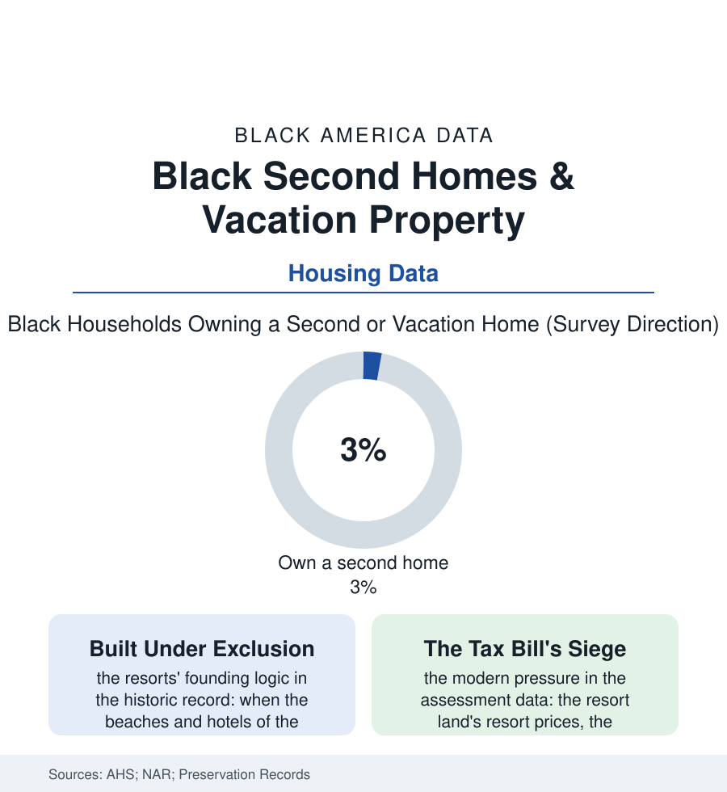

Black Census
The Second Roof: Black Vacation Homes and the Historic Resorts
Oak Bluffs, Idlewild, American Beach, Sag Harbor — the Black resort towns were built when the nation's beaches were closed, and their cottages are now an inheritance under siege by the market. The second-home file.

The wealth file's most storied asset class is the second roof: the cottage at the shore, the cabin at the lake, the house in the hometown. Black America's version of it carries a history no other group's does, because its founding resorts were built under exclusion — whole towns raised because the nation's vacationland was closed — and their cottages pass down now as heirlooms the market covets. This article reads the second-home file.
The Resorts That Exclusion Built
The historic register names them like a liturgy: Oak Bluffs on Martha's Vineyard, where Black families bought from the nineteenth century and the town became the summer capital of the Black elite — the Inkwell beach's name itself a document, its cottages' deeds a century deep. Idlewild, Michigan, the 'Black Eden' of the resort era, where the lot sales built a summer city of thousands with nightclubs that booked the century's whole revue. American Beach, Florida, founded by a Black insurance executive of the business file precisely as a beach his policyholders could enter. Sag Harbor's Azurest and its sister enclaves on Long Island; Highland Beach, Maryland, founded by Frederick Douglass's son; the Bruce's Beach of the California record, taken by eminent domain in the 1920s and returned to the family's descendants by the county in this decade — the taking and the return both in the public record, the file's whole argument in one parcel. The pattern the preservation data codify: these were not imitations of the majority's resorts but parallel institutions, built with the community's own capital (the insurance companies' and fraternal orders' money beside the families'), holding the leisure file's scarcest good — a shore where the family was the intended guest — and accumulating, across the exclusion's long decades, the land appreciation the nation's beaches compounded. The integration era wrote the resorts' paradox into the census tract data: the opened mainstream destinations drawing the younger generations' summers, the enclaves' cottages aging with their owners, the preservationists arriving — as they did for the business districts of the cities file — at the moment of maximum fragility.
The Modern Ledger
The current data show the second-home market's racial arithmetic in the survey rows: Black households holding vacation property at a fraction of the white rate — the wealth file's distribution expressed in deeds, the second roof being definitionally the asset bought after every other need is met, its ownership the purest single marker of the surplus the income data cannot see. The historic enclaves' modern chapter is the heirs'-property file at resort prices: the Oak Bluffs and Azurest cottages whose assessments have ridden the Vineyard's and the Hamptons' markets into the millions, the property-tax bills arriving at heirs whose incomes match the census file, not the Zillow file — the buyout offers, the partition actions of the heirs' property article in their most valuable theater, the land trusts and preservation easements and the states' heirs'-property reforms deployed, cottage by cottage, as the enclaves' defense. Against the siege stands the enclaves' living function in the social data: the summer colony as the network file's annual convention — the marriages, mentorships, and deal-flow of the Black professional class transacted on the same porches for a century, the economists of social capital able to trace specific institutions to specific Augusts — and a new buying generation entering in the recent transaction data: the pandemic era's remote-work second homes, the Southern hometown returns of the migration file with a deed attached, the group-buying and family-compound models the wealth educators preach. The second roof, the data conclude, is where this population's wealth goes to become memory — and the fight of the file is whether the memory's ground stays in the family's name.
Reading the Second-Home Data
The second-home file is the census section at leisure, which is where its truths relax into view: who may rest, where, on land whose deed says whose. The housing surveys publish the rates. The porches publish the rest — four generations deep at Oak Bluffs, the grill lit, the water open, at last and at first, to them. Hold the deed, the families say. The data finally agree with them.
More in Black Census
The Black Population of the United States: Size, Definitions, and Distribution
The Black population of the United States totals 52.8 million — 15.4 percent of the nation. How the Census Bureau defines and counts the population, and where it lives.
Black Median Household Income in the United States
Black median household income stands at $56,490 in the Census Bureau's annual income report — how the figure is measured, how it compares, and what drives it.
The Black Poverty Rate: Levels, Children, and the Long Trend
The official Black poverty rate is 17.1 percent — against 11.1 percent nationally and 7.7 percent for non-Hispanic White Americans. How poverty is measured and what the data show.
Source: U.S. Census Bureau American Housing Survey and decennial seasonal-housing data; National Association of Realtors research; Smithsonian and state historic preservation records.